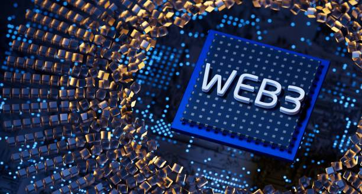
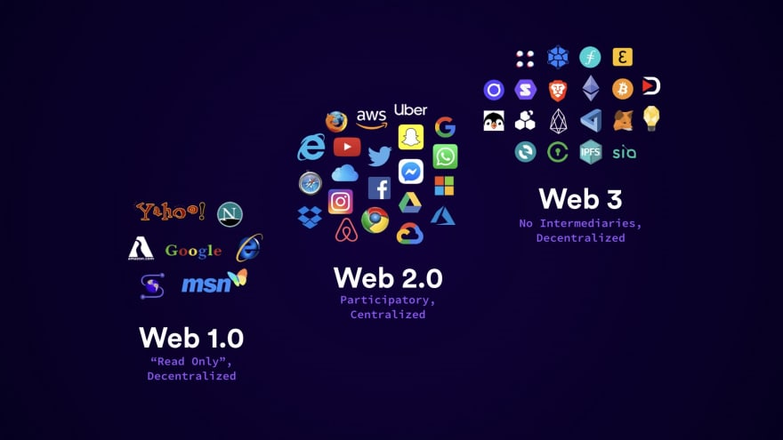
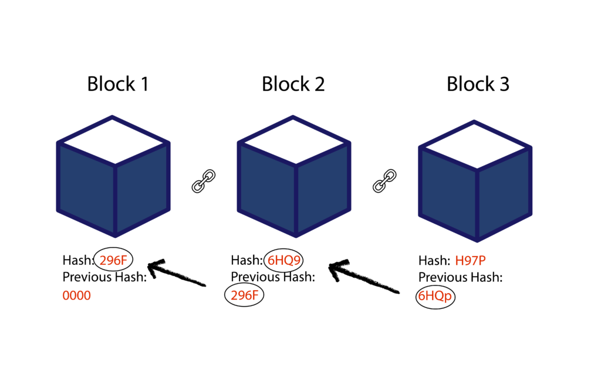
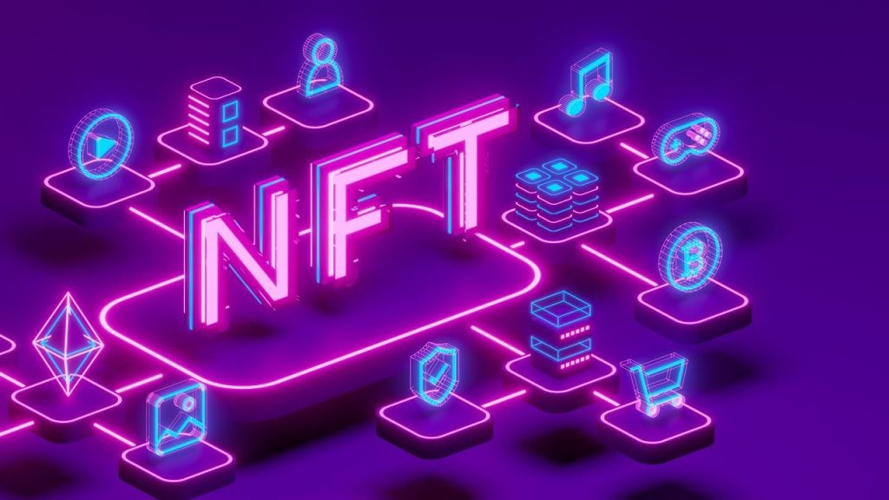
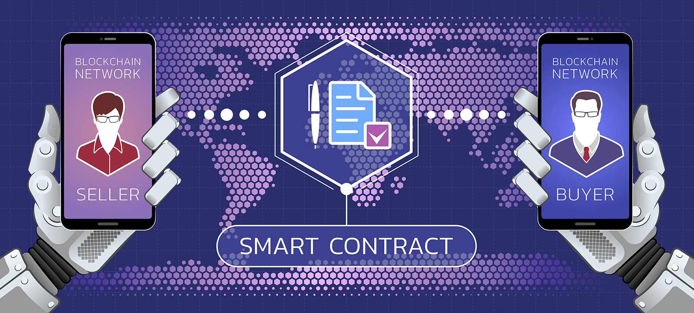
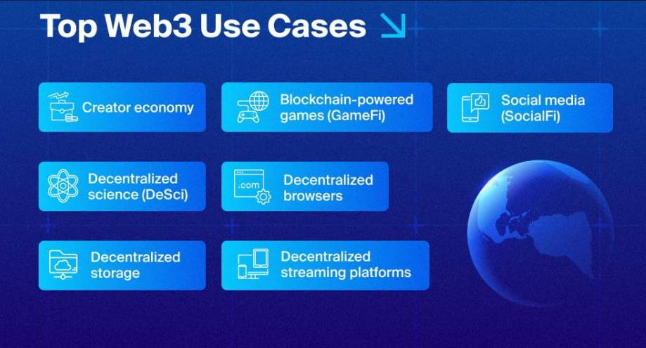

Уеб2 ние дава невероятно свързан свят, но тази свързаност идва на висока цена - централизиран контрол на дигиталния свят. Платформи като Фейсбук и Ютюб доминират начина по който съдържание се създава, споделя, и монетизира - на практика е митничар между публиката и създателите на съдържание. Всеки пост, видео или дигитален актив е съхраняван върху сървърите на компании, и представлява субект на правилата, алгоритмите и политиките на платформата. Това означава че дори най-известните създатели на съдържание разчитат на благосклонността на често бледите системи за модерация, политики за демонетизация или дори най-просто внезапни промени в платформата, които затриват тяхната достижимост или още по-зле, да затрият изцяло техните трудове. Централизираните платформи имат силата на скалата и леснотатата на позлване, но също така те концентрират силата и контрола в ръцете на няколко корпоративни единици, оставяйки потребителите на практика с много малко свобода над собствения си дигитален отпечатък.
Едно от най плашещите последствие от тази централизация е липсата на истинска собственост. Когато някой създаде вид съдържание, купи виртуален артикул, или акумулира репотация в Web2 платформа, на практика платформата притежава този актив. Потребителите може да имат право на достъп и ползване, но те не държат собствеността. Това ограничение е доста видно в гейминг индустрията или съдържанието базирано на абонамент, където всичкия прогрес, покупки и др. остават заключени в една екосистема. Ако компания прекрати услуга или промени условията си, потребителите често просто губят достъп до всичко което са създали или закупили.
Платфоррми като Фейсбук и Ютюб са добър пример за модела. Фейсбук съхранява огромни количества от лични данни, снимки и интеракции, контролирайки колко и кога биват споделени. Ютюб хоства милиони часове видеа, и създателите имат минимален контрол върху разпределенитео диктувано от алгоритъма, монетизацията и понякога дори премахването на тяхното съдържание. Дори популярни създатели на съдържание могат без обяснение да срещнат внезапна демонетизация, илюстрирайки колко централизираните системи приоритизират корпоративните си политики пред индивидуалната собственост. Структурата предоставя удобство, но фундаментално не дава автономия на потребителите като дигитални участници.
Това същност дава сцена на Web3. Чрез подчертаване на проблемите, породени от централизирания контрол, ние можем по-добре да разберем защо поемането по посока децентрализация, където потребителите могат да имат истинска собственост над съдържанието си и контрол над активите си, има значение. Трудностите на Web2 не са просто технически, те са дълбоко свързани с доверието, стойността и честността на дигиталните пространства, именно това което блокчейн базираните решения се опитват да адресират.

Web3 дава сила на потребителите като осигурява механизми с които стойността и достъпа не са медиирани от единствена компания. Чрез блокчейн технология, собствеността е директно свързана с криптографски ключове за разлика от потребителски профили в дадена платформа. Това означава че създателите на съдържание могат да задържат правата си над тяхната работа, да я продават на дигитални пазари, или дори да въведат автоматично хонуруване при следващи трансакции. Опции които са често невъзможни в Web2 света стават напълно реалистични чрез Web3. Собствеността става преносима, човек може да премества активи между приложения, да участва в множество общности или да доказва автентичност без да има нужда от валидация и позволение от централна орган.
Нови възможности се пораждат от това движение. Дигиталните пазари вече позволяват на създателите на съдържание да продават уникални артикули, като NFT-та, директно на купувачи, избягвайки "митничари" и трети страни. NFT например трансформира дигитално изкуство, музика и др като активи, чийто произход и рядкост са недвусмислени. Извън изкуството, системата зарежда богати на съдържание икономики, където независими създатели могат да монетизират работата си, да си съдействат на международно ниво и най-вече да запаззят контрол над собствеността си. Това отключва цяло екосистема от икономически и социални интеракции, преди невъзможни поради централизиращите органи.

Когато говорим за разликите между Web2 и Web3, един от най видимите контрасти лежи в това къде стои контролът и кои са основните органи. Web2 оперира на централизирани сървъри, което означава че не потребителите, а компаниите притежават и менажират цялата инфраструктура, всички данни и правилата в платформата. Всичко от това кой вижда съдържанието до това как трансакциите се обработват е под контрола на самата платформа. На практика, това означава че ако компания като Ютюб или Фейсбук реши да изтрие нечие съдържание, да ограничи достъпа или да промени условията на ползване, потребителите нямат сила да променят това. Силата на мрежата е концентрирана в ръцете на просто няколко лица.
Web3 обръща този модел, като използва децентрализирани мрежи базирани на блокчейн. Вместо единен орган, контролиращ всичко, мрежата е колективно управлявана от всички участници, и правилата които всички спазват се изпълняват чрез код вместо чрез корпоративни политики. Потребителите взаимодействат със системата чрез дигитални портфейли които съхраняват частни ключове, давайки им криптогравско доказателство за тяхната собственост над дигитални активи, без значение какви са те. Трансакциите не биват одобрявани или цензурирани от коя да е компания, те просто биват верифицирани и съхранявани от самата мрежа и алгоритъм, правейки ги прозрачни, удобни за проверка, и неподменяеми.

Блокчейн е гръбнака на Web3, и всичко си идва на мястото, веднъж човек разбере ли как работи той. В основата си, блокчейнът е разпределен списък, верига от блокове данни съхранявани в мноество компютри, вместо в един централизиран сървър. Всеки блок съдържа съвкупност от трансакции или записи, наред с криптографски хеш, свързващ го с предходния блок. Тази структура поддържа много добър интегритет, тъй като промяната на един блок потенциално би изискало рекалкулация на всички последващи блокове във всяко копие инстанциирано в мрежата, което е невъзможно от практическа гледна точка. Накратко, блокчейна обръща доверието към централен орган в прозрачна, неограничена система за верификация.
Консенсус механизмите са всъшност това което позволява на децентрализираната мрежа да се съгласява на това кои данни са валидни за вписване във веригата. В POW механизма, копачки решават сложни математически пъзели за да валидират трансакции и да добавят нови и нови блокове, като биват наградени за своите изчислителни усилия. Отдруга страна, при POS механизма, се разчита на валидатори които залагат своите средства (токени) за да валидират блокове, като това е добра алтернатива тъй като спестява значително количество електрическа енергия.

Дигиталната собственост в Web3 се базира на три основни механизма - портфейли, токени и умни договори. Портфейлите представляват портал към системата. Те не пазят активи сами по себе си, а просто съхраняват частните ключове, криптографски пароли, които доказват собственост над дигитални активи в мрежа. Без портфейл, човек не може да достъпи своите активи. Това измества балансът на сила от централизираните органи към индивидуалните лица. Може да се мисли за портфейла като личен, невъзможно за проникване по никакъв начин идентификатор за всичко което човек притежава онлайн.
Токените са реалната идея за дигитална стойност и могат да бъдат fungible и non-fungible. Fungible токените като биткойн и етериум са заменяеми единици от валута, които са идеални за трансакции. Non-fungible (NFT) от друга страна са уникални, единствени по рода си, дигитални артикули, които представляват изкуство, артикули за колекциониране, или игрови активи. NFT-тата позволяват на създателите да кодират рядкост и уникалност директно в техните творения, позволявайки на купувачите да имат пълно доказателство над собствеността си и пълна гаранция за произхода, неща, практически невъзможни за Web2
Умните договори са невидимите правила които позволяват обмяна и действията зад собственността. Те са самоизпълняващи се програми, съхранявани в блокчейна, които автоматично изнасят условията на трансакция, веднъж като предварително зададени условия бъдат изпълнени в произволни ситуации във времето. Те обработват плащанията, прехвърлят собствеността или прилагат хоноррари без посредници. Например, един умен договор може да осигури че едно NFT автоматично изпраща част от препродажбата обратно към оригиналния създател, всеки път при препродажба. Това позволява елементарна среда където собствеността и свързаните права се изпълняват от код вместо от централизирани органи.

Във всяка трансакция Web3 следва ясен, верифицируем път който осигурява собствеността и доверието без да разчита на централен орган. Започва се с потребителския портфейл, който държи ключовете, удостоверяващи контрола върху дигиталните активи. Когато потребител желае да извърши действие свързано с децентрализирано приложение (т.нар. dApp) като например да закупи токен, да участва в игра, или да заеме криптовалута, портфейлът комуникира с приложението да инициира трансакция. Тази стъпка осигурява че единствено пълноправния собственик може да авторизира действията свързани с актива.
Когато приложението получи инструкциите, то задвижва умен договор, т.е. препрограмирано множество от правила, което автоматично верифицира дали условията, дали потребителят притежава достатъчно средства, дали активът който иска да закупи е наличен, и т.н., и изпълнява трансакцията както следва. Тази автоматизация премахва нуждата от посредници, и договорът се изпълнява точно както е написано, а трансакцията е предвидима и непроменима.
След изпълнение, трансакцията е изпратена към блокчейн мрежата за валидация. Възлите в мрежата проверяват валидността на трансакцията спрямо консенсус правилата за да осигурят автентичност, грешки, и др. Веднъж одобрена, трансакцията се записва перманентно в нов блок, свързвайки я с веригата в защитен от изменения списък. Този процес гарантира промените при собствеността и са публично верифицируеми, така че всеки може да проследи историята на един актив, и то дори без да разкрие идентичностите на собствениците.
Резултатът е чист поток от портфейлът към приложението към умния договор към запис в блокчейна, което позволява система неизискваща доверие, но същевременно напълно сигурна. Визуално, потребител, който закупува NFT - неговият портфейл подписва покупката, умния договор потвърждава плащането и прехвърля токена, а блокчейна перманентно осчетоводява собствеността Всяка следваща обмяна следва същия поток, осигурявайки сигурност на собствеността на всяка стъпка, превръщайки това което е било преди блед Web2 в напълно прозрачен и контрелиран от потребитля процес.

Web3 вече е започнал да видоизменя начина по който хората взаимодействат с дигитално съдържание, и някои от най видимите приложения са пазарите на NFT. Те позволяват на създателите да продават и обменят дигитални артикули директно с купувачи, пропускайки традиционните посредници.
В гейминг пространството също Web3 създава вълни. Има игри, в които играчите имат възможността истински да притежават in-game активи като създания, земя и item-и, на практика те представляват тип NFT, така че по същия начин потребителите могат да ги продават и обменят. Аналогично, Web3 децентрализирани приложения могат да бъдат от голяма ползва във виртуални светове и виртуалната реалност.
В тези примери най-малкото общо кратно е способностите, които Web3 предоставя, дава на потребителите контрол над своите дигитални активи, отключваки нови форми на креативност, икномика и социално взаимодействие. Това показва, че собствеността в дигиталното пространство може да бъде не просто теоритична, може да бъде активно използвана, търгувана и използвана за създаване на възможности, които биха били невъзможнив в модела на Web2.